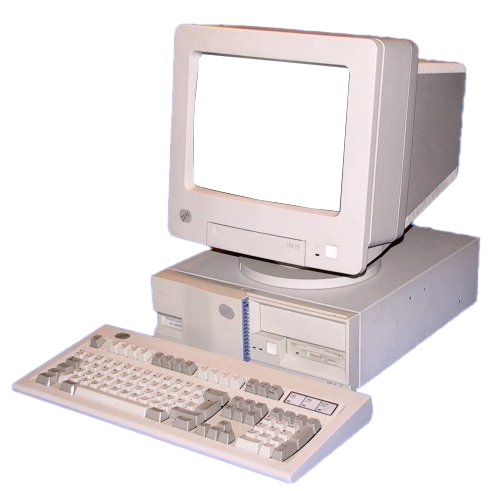

<!-- You may delete this line of instruction once you have read it. Place this code wherever you want the graphic displayed. -->

<div class="crt-wrapper">

    <!-- THIS is your “screen content” -->
    

    <!-- This is the overlay frame -->
    

</div>
